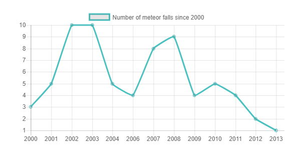
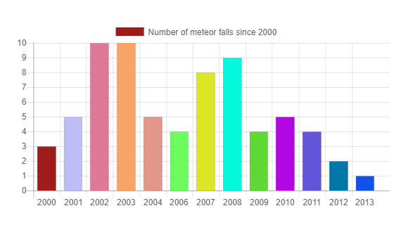
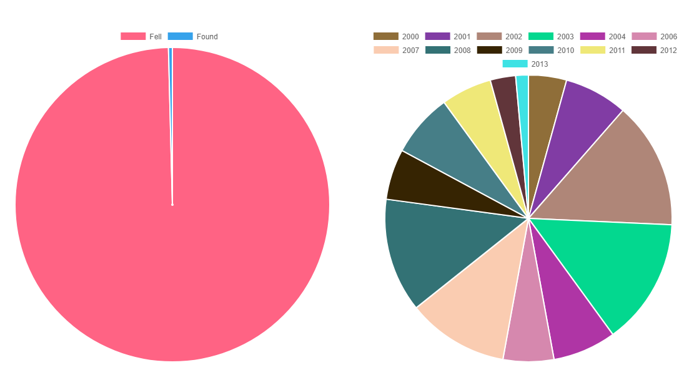
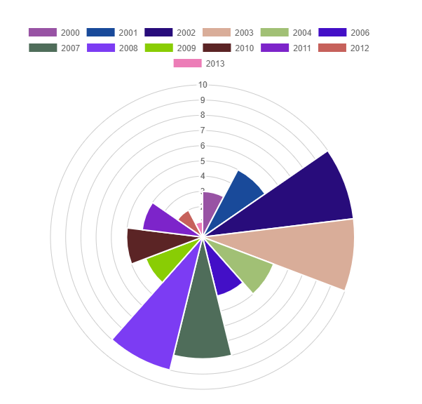

Data Visualisation
Abstract
Data Visualisation proposes to provide an interesting means of complex visualization of the meteor fall data set.
Motivation
This homework proposes to visualize in five ways the number of meteor falls in the last decade and to understand how these numbers evolve over time.
Line chart
A line graph provides a means in which to compare two different types of information through showing how they are similar and how they are differ. This is performed through the use two lines each representing the two aforementioned pieces of information which are then charted along a numerical scale.
Bar chart
A bar graph is very similar to a line graph in the sense that it is designed to show different values of two or more subjects but instead of using lines it using horizontal and vertical bars that represent a different value. There are numbers along the side of a bar graph and they are scales identical to what would be found on a line graph. In a way, this type of graph is somewhat easier to read than a line graph and it conveys informational equally as well.
Pie chart
The pie chart serves the same purpose of a line graph and a bar graph in the sense it is designed to show differences between two separate subjects although it eschews the common linear style found in the two other graphs. A pie chart is a very common type of graph that is in the shape of a circle with the circle representing a collective of 100%. Then, within the circle smaller percentage portions within the 100% will be presented in different colors. Sometimes the shapes look like slices taken out of a pie and this is where it gets the nickname of a pie chart
Polar chart
A radar chart or a polar chart is a graphical method of displaying multivariate data in the form of a two-dimensional chart of three or more quantitative variables represented on axes starting from the same point. The relative position and angle of the axes is typically uninformative.
References
- Human-Computer Interaction
- Human-Computer Interaction Course, by Dr. Sabin Buraga